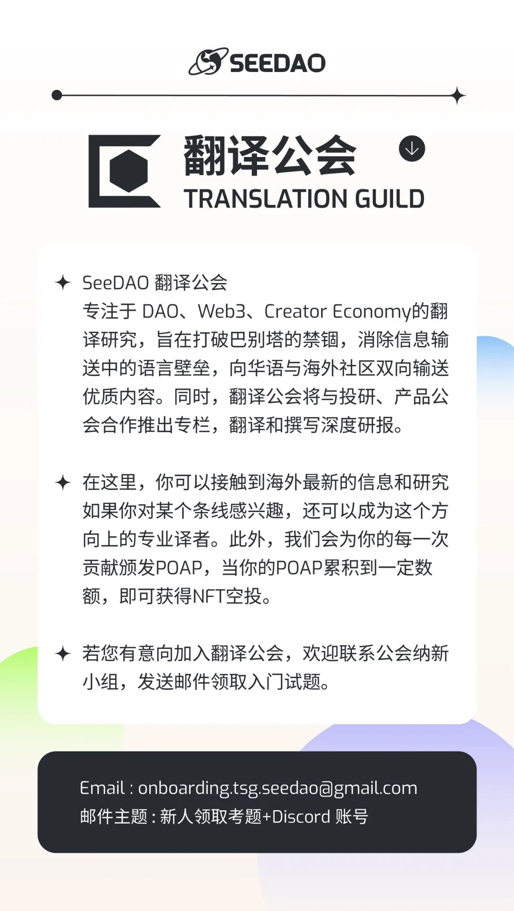

作者｜Li Jin
翻译｜leo
校对｜Shawna zhou
排版｜Bo
审核｜Bo
「点击底部“阅读原文”即可跳转原文链接」
建立创意社区首先要有好的内容，然后才是社区所有权。
以下内容最初发布在我的 Twitter 上。
Web3 最重要的趋势之一是社区生成媒体的兴起。粉丝正在成为角色世界之外的媒体或应用开发的共同创造者，或者影响内容创作的方向。从《涩谷》中影响动画电影情节发展的粉丝，到为自己的角色提交故事情节以纳入小说的 NFT 持有者，各种例子在创意垂直领域不断涌现。在去中心化共同创作的极端情况下，这些模式可以是完全开放式的；以《Loot》为例，这是一款代表冒险装备道具的 NFT 系列游戏，发行后完全交由社区解释和发展，并由此产生了公会、工具、游戏和其他应用的生态系统。
我的一个假设是，渐进式去中心化不仅是构建加密应用的有效方法，也是这种社区驱动型内容创作的有效方法。换句话说，要建立一个创意社区，首先应该由一个小团队制作出优秀的内容，然后再移交控制权和所有权。
这套玩法与我的合作伙伴杰西-沃尔登（Jesse Walden）最初撰写的加密应用渐进式去中心化的玩法如出一辙，即首先为应用寻找产品与市场的契合点，然后培养用户社区，最后以代币的形式向用户分配所有权。在媒体领域，与之相对应的是：
内容与市场的契合，即制作人们想要的东西
社区参与，即促进受众的介入和参与
社区所有权，即把所有权和控制权让给社区
这种步步为营创造了一条路径，使创作者在让渡更大的控制和所有权给粉丝之前，能够创造出与活跃社区产生共鸣的内容。
初始内容由核心创作者/团队创作，他们启动一个有凝聚力、引人注目的媒体作品，找到内容与市场的契合点。鉴于创意工作通常由一个创作者或一个小团队的愿景主导，委员会/社区很难做到这一点，因此这一初始阶段与传统的媒体创作模式类似。
最初的作品会成为一个社区形成的避雷针，让他们在情感上与角色/故事情节联系在一起，并从本质上激励他们参与其中。随着时间的推移，他们会越来越多地参与更多 IP 创造的决策。最终，代币和粉丝所有权可以推动社区参与，例如激励粉丝创作衍生作品和故事。
这种 "渐进式媒体去中心化 "在同人世界中也有类似之处，在同人世界，蓬勃发展的社区在原创作品的启发下创造出衍生品，这些原创作品成为受众参与的谢林点（聚焦点）。例如，《哈利-波特》或《暮光之城》的同人小说都是在原创作者创作了一些作品并聚集了一个社区之后才出现的。如果将这一顺序颠倒过来，期望一个社区来创造这些最初的故事和角色，将是一个巨大的挑战。
在 web3 世界中，这种渐进式去中心化的例子有哪些？Forgotten Runes、Tally Labs、Shibuya、Bored Ape 和 Mad Realities 都在核心创作团队的指导下创作内容，并为粉丝的参与设定了范围参数，以期随着时间的推移，让粉丝拥有更大的自主权。
与这种模式形成鲜明对比的是从一开始就分散创建的模式，例如Loot Project。这条道路也是可行的，但由于社区需要从零开始，因此可能更具挑战性。正如杰西在最初的文章中所概述的那样，这条路有可能会创造出一个没有足够内在兴趣参与的投机者社区，而不是真正的粉丝社区。我们在许多 NFT 社区中看到的情况正是如此：如果成员之间没有建立和扩展核心叙事的内在动力基础，这些代币持有者社区就会变得脆弱和投机，人们会在长期路线图实现之前就开始寻找下一个可以押注的东西。
